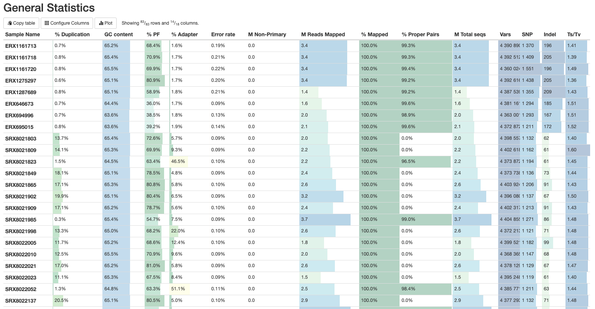
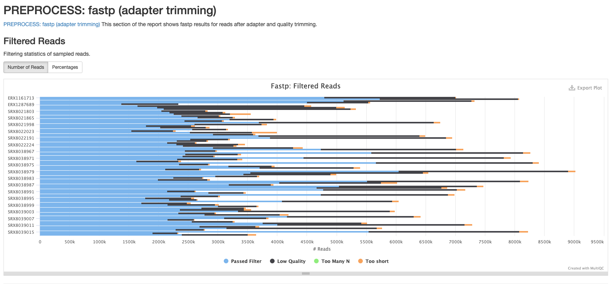
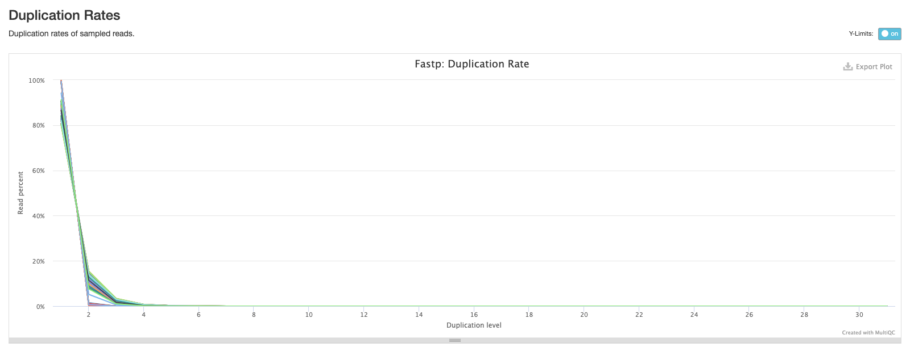
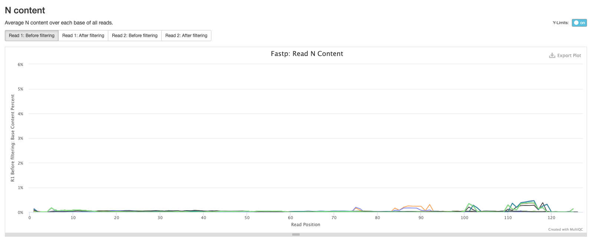
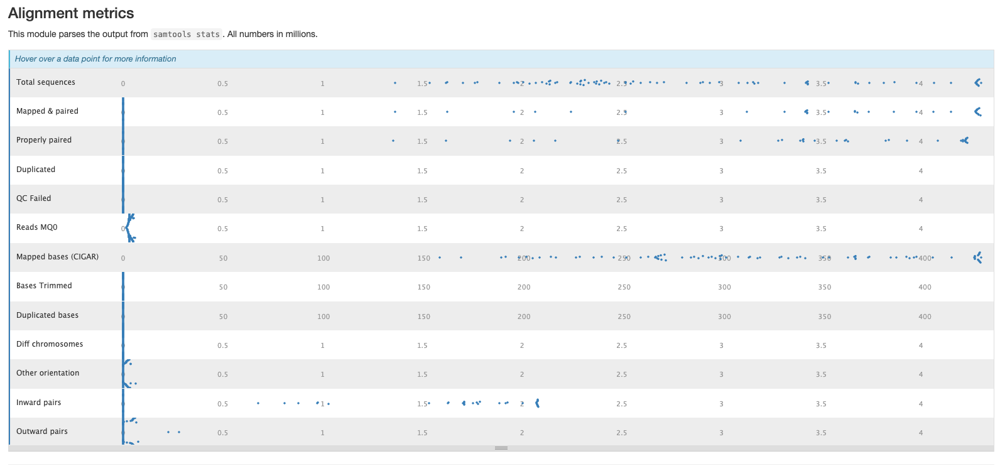
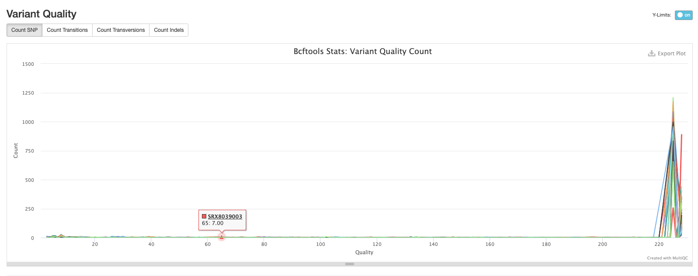

9.2 nf-core/bactmap Results
Teaching: 20 min || Exercises: 10 min
Overview
9.1 nf-core/bactmap results
This morning, we left nf-core/bactmap running. Now, we can look at the output directory (results/bactmap) to see the various directories containing output files created by nf-core/bactmap.
cd results/bactmap/bactmap_results
lsYou should see the following:
bwa fastp multiqc pipeline_info pseudogenomes rasusa samtools snpsites variants The directories in results/bactmap/bactmap_results contain the following:
| Directory | Description |
|---|---|
bwa/index |
Contains the index of the reference sequence |
fastp |
Contains the results of the trimming and adapter removal performed by fastp |
fastqc |
Contains QC metrics for the fastq files generated with fastQC |
multiqc |
Contains a html file containing summaries of the various outputs |
pipeline_info |
Contains information about the pipeline run |
pseudogenomes |
Contains consensus fasta files for each sample which have the sample variants compared to the reference included. The alignment we’ll use for the next step can also be found in this directory (aligned_pseudogenomes.fas) |
rasusa |
Contains the subsampled post-trimmed fastq files |
samtools |
Contains the sorted bam files and indices created by bwa and samtools as part of the mapping process |
snpsites |
Contains a variant alignment file created from aligned_pseudogenomes.fas with snp-sitesthat can be used as input for tree inference tools |
variants |
Contains filtered vcf files which contain the variants for each sample |
The MultiQC summary report
The first thing we’ll check is the html report file created by MultiQC. Copy this to your desktop:
cp results/bactmap/bactmap_results/multiqc/multiqc_report.html DesktopUnfortunately, there is a bug with the conda environment bactmap uses for MultiQC so the pipeline may exit with an error before it finishes. In that case, we will have to generate the multiqc_report.html ourselves. Go to bottom of the white text showing the pipeline execution. To the left of the NF_BACTMAP:BACTMAP:MULTIQC (1) text you should see a combination of letters and numbers e.g. [52/6cd885]. This will enable you to find the sub-directory in the work that contains the results files we can run MultiQC on.
cd work/52/6cd885 then click TABThis will take you to the directory. Now we can make use of the qc environment which contains MultiQC:
mamba activate qc
multiqc -f .MultiQC will then run and create the multiqc_report.html. Copy it to the results/bactmap directory:
mamba activate qc
multiqc -f .
cp multiqc_report.html ../../../results/bactmapGo to File Explorer, navigate to your Desktop and double click on multiqc_report.html. This will open the file in your web browser of choice:

General statistics
Let’s go through each section starting with the General Statistics:

This is a compilation of statistics collected from the outputs of tools such as fastp, samtools and BCFtools. Sequencing metrics such as the % of duplicated reads and GC content of the reads are shown alongside the results of the mapping (% reads mapped, num). This is a useful way of quickly identifying samples that are of lower quality or perhaps didn’t map very well due to species contamination.
fastp
There are a number of plots showing the results of the fastp step in the pipeline. The first shows the results of the read filtering step where reads are trimmed, adapters removed and low quality reads are thrown out. The reads that passed this step are highlighted in blue.

The second plot shows the frequency of duplicated reads in each sample. If you hover over the plot around 1 on the x-axis you’ll see that the majority of reads in each sample only appear once.

The third plot shows the distribution of insert sizes for each set of sequence files. As we’ve included data sequenced on different Illumina platforms with different library construction protocols, there’s a mix of insert sizes.

The next plot shows the average sequence quality across the reads in each sample. You can see we have drop offs in quality at the beginning and end of reads; this is pretty typical and is an artefact of the sequencing process.

The fifth plot shows the average GC content across the reads in each sample. As you might expect, the average GC content is conserved across all the samples as they are all from the same organism (MTB).

The final fastp plot shows the average N content across the reads in each sample. Similar to what we see in the sequence quality plot, the number of Ns tends to increase towards the end of reads.

Samtools
The plots in this section are created from the results of running samtool stats on the sorted bam files produce during the mapping process. The first shows the number or percentage of reads that mapped to the reference.

The second plot shows the overall alignment metrics for each sample. Hover over each dot to see more detailed information.

BCFtools
The plots in this section provide information about the variants called using bcftools. The first plot shows the numbers or percentage of each type of variant in each sample.

The second plot shows the quality of each variant called by bcftools. The majority of variants in each sample are high quality.

The third plot shows the distribution of lengths of Indels (insertions are positive values and deletions are negative values). This is useful information to have, but in practice we tend to exclude indels when building alignments for phylogenetic tree building.

The final bcftools plot shows the distribution of the number of reads mapping to each variant position and is one of the metrics used to filter out low quality variants (the fewer the reads mapping to a variant position, the lower the confidence we have that the variant is in fact real).

Software versions
This section of the report shows the software run as part of nf-core/bactmap and the versions used. This is particularly important when reproducing the analysis on a different system or when writing the methods section of a paper.

The pseudogenomes directory
This directory contains the files that are most useful for our downstream analyses (at least for now). Change to the directory and list the files:
cd bactmap_results/pseudogenomes
lsYou will see the pseudogenome fasta files (a version of the reference file where the sample variants have been inserted and low-quality or missing data has been masked) for each sample, an alignment of all the samples and the reference sequence (aligned_pseudogenomes.fas), and a tsv file of genomes removed from the complete alignment due to poor mapping (low_quality_pseudogenomes.tsv):
aligned_pseudogenomes.fas SRX8021902.fas SRX8022224.fas SRX8038978.fas SRX8038993.fas SRX8039008.fas
ERX1161713.fas SRX8021909.fas SRX8038964.fas SRX8038979.fas SRX8038994.fas SRX8039009.fas
ERX1161718.fas SRX8021985.fas SRX8038965.fas SRX8038980.fas SRX8038995.fas SRX8039010.fas
ERX1161720.fas SRX8021998.fas SRX8038966.fas SRX8038981.fas SRX8038996.fas SRX8039011.fas
ERX1275297.fas SRX8022005.fas SRX8038967.fas SRX8038982.fas SRX8038997.fas SRX8039012.fas
ERX1287689.fas SRX8022010.fas SRX8038968.fas SRX8038983.fas SRX8038998.fas SRX8039013.fas
ERX646673.fas SRX8022021.fas SRX8038969.fas SRX8038984.fas SRX8038999.fas SRX8039014.fas
ERX694996.fas SRX8022023.fas SRX8038970.fas SRX8038985.fas SRX8039000.fas SRX8039015.fas
ERX695015.fas SRX8022052.fas SRX8038971.fas SRX8038986.fas SRX8039001.fas SRX8039016.fas
low_quality_pseudogenomes.tsv SRX8022137.fas SRX8038972.fas SRX8038987.fas SRX8039002.fas SRX8039017.fas
SRX8021803.fas SRX8022138.fas SRX8038973.fas SRX8038988.fas SRX8039003.fas
SRX8021809.fas SRX8022191.fas SRX8038974.fas SRX8038989.fas SRX8039004.fas
SRX8021823.fas SRX8022198.fas SRX8038975.fas SRX8038990.fas SRX8039005.fas
SRX8021849.fas SRX8022201.fas SRX8038976.fas SRX8038991.fas SRX8039006.fas
SRX8021865.fas SRX8022206.fas SRX8038977.fas SRX8038992.fas SRX8039007.fasLet’s check to see if any of our samples were removed from our alignment:
cat low_quality_pseudogenomes.tsvThis returns an empty file; all of our samples mapped well enough to the reference to be included in our complete alignment. That means we can proceed to the next step of our analysis: phylogenetic tree inference.
Disk Usage II — Cleaning up after analysis
Now that we are done investigating our assembling and annotating our genome, let’s pause again and check the space of our current working directory.
You can do this with the disk usage du command
du -hHow much disk space have you used since the start of the analysis?
The work directory
Each step of the pipeline produces one or more files that are not saved to the results directory but are kept in the work directory. This means that if, for whatever reason, the pipeline doesn’t finish successfully you can resume it. However, once the pipeline has completed successfully, you no longer need this directory (it can take up a lot of space) so you can delete it:
rm -rf workHow much disk space did deleting the work directory free up?
9.2 Deactivate nextflow environment
Now that we are done with all our analysis, let’s deactivate the nextflow environment:
mamba deactivate